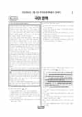

문제지


시험지를 먼저 풀어 보세요. 등급컷·표준점수·난이도는 흐리게 가려 뒀어요.
| 등급 | 원점수 | 표준점수 | 백분위 |
|---|---|---|---|
| 1 | 91 | 131 | 96 |
| 2 | 83 | 125 | 89 |
| 3 | 74 | 117 | 76 |
| 4 | 65 | 108 | 61 |
| 5 | 51 | 95 | 40 |
| 6 | 36 | 81 | 23 |
| 7 | 26 | 72 | 11 |
| 8 | 21 | 68 | 4 |
등급별 컷 · 만점 100점
| 등급 | 표준점수 이상 | 인원(명) | 비율 |
|---|---|---|---|
| 1 | 131 | 14,853 | 4.83% |
| 2 | 125 | 22,599 | 7.35% |
| 3 | 117 | 38,175 | 12.41% |
| 4 | 108 | 47,764 | 15.53% |
| 5 | 95 | 64,585 | 21% |
| 6 | 81 | 51,575 | 16.77% |
| 7 | 72 | 37,635 | 12.24% |
| 8 | 68 | 20,003 | 6.5% |
| 9 | 53 | 10,335 | 3.36% |
국어 영역 전체 응시자 기준이에요.
출처: 시·도교육청이 공개한 전국연합학력평가 성적 분석·통계자료(공개 자료 보기).
발행 기관: 시·도교육청(전국연합학력평가). 파일 위치: 이 사이트가 보관한 사본. 저작권은 발행 기관에 있습니다. 원본과 다르거나 게시 중단이 필요하면 연락처로 알려 주세요. 등급컷 출처 구분은 데이터 원칙에서 설명합니다.
막대 색은 역대 대비 난이도 · 진한 막대가 이 시험 · 막대를 누르면 그 회차로 이동
| 회차 | 1등급컷 | 표점 최고 | 1등급 표점 | 난이도 |
|---|---|---|---|---|
| 7월 학평2025년 고3이 시험 | 91 | 139 | 131 | 쉬움 |
| 3월 학평2025년 고3 | 78 | 159 | 136 | 매우 어려움 |
| 10월 학평2024년 고3 | 94 | 134 | 129 | 쉬움 |
| 7월 학평2024년 고3 | 94 | 135 | 130 | 매우 쉬움 |
| 3월 학평2024년 고3 | 82 | 150 | 133 | 어려움 |
| 10월 학평2023년 고3 | 97 | 128 | 126 | 매우 쉬움 |
| 7월 학평2023년 고3 | 88 | 141 | 132 | 매우 어려움 |
| 4월 학평2023년 고3 | 93 | 137 | 130 | 매우 쉬움 |
| 3월 학평2023년 고3 | 85 | 146 | 133 | 어려움 |
| 10월 학평2022년 고3 | 86 | 141 | 129 | 어려움 |